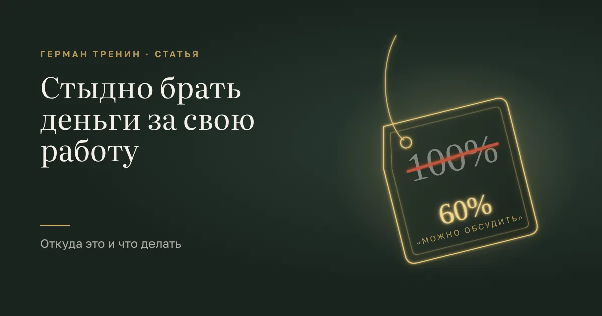

Стыдно брать деньги за свою работу: откуда это и что делать

Ты знаешь, сколько стоит твоя работа. Цифра посчитана не раз: себестоимость, рынок, что берут коллеги. А потом клиент спрашивает «сколько» — и вместо цифры звучит что-то другое. Объяснение, что входит в стоимость. Сколько лет опыта. Почему это того стоит. И в конце — цифра, но уже меньше той, что была в голове. И «но если дорого — можно обсудить».
Клиент ещё ничего не сказал.
Как это выглядит
У этого есть узнаваемые признаки. Проверь, сколько твоих.
Оправдание цены, которая ещё не названа. Ты начинаешь с того, почему это стоит столько, — до того, как кто-то усомнился. Тебе кажется, что ты продаёшь. Клиент слышит, что ты извиняешься.
Скидка, согласованная до разговора. Ты идёшь на встречу с ценой и с запасной ценой. Запасная уже одобрена — внутри, без клиента. Торг закончился до того, как начался, и уступка в нём — твоя.
Старым — по старой. Прайс обновлён для новых. Те, кто с тобой давно, платят как три года назад. «Они же свои». Выходит, самым близким ты обходишься дешевле всех.
Сделано больше, чем договаривались. И не сказано. Какая-то часть тебя берёт дополнительную работу молча, не поднимая вопроса об оплате. Ей кажется, что так всем удобнее и быстрее. На деле — обманутые ожидания, силы и время впустую. Редкий клиент готов доплатить сверху только из благодарности за то, что его избавили от лишних хлопот.
Счёт, который не выставлен, никто не оплачивает.
Чужая цена нормальная, своя такая же — наглая. Коллега берёт вдвое больше, и это «ну, он может». А ты — нет. Почему — не объяснить. Просто не можешь.
И самое дорогое для того, у кого своё дело: в собственном бизнесе ты — самый дешёвый специалист. Час подрядчика стоит денег. Час сотрудника стоит денег. Твой час — «проще самому», «по дружбе», «потом сочтёмся».
Если три из шести — про тебя, читай дальше. Дело не в том, что ты не знаешь цену.
Почему цифры не помогают
Обычный совет звучит так: посчитай себестоимость, изучи рынок, обоснуй. Всё это давно сделано. Цифры сошлись. А в разговоре всё равно происходит то же самое.
Следующий совет — скрипт. Скрипт работает, пока говоришь по бумажке. В живом разговоре он слетает на первом же «хм» с той стороны.
Третий — «надо ценить себя». Неделю работает. Потом становится неловко уже за это.
Все три совета лечат незнание: цифры, слов, правильной мысли о себе. А проблема не в знаниях. Клиент слышит не цифру. Он слышит состояние, в котором цифра названа. Неуверенность. Страх, что не выберут. Нужду — с уже готовой скидкой в кармане. Нужду слышно через любой скрипт.
Знание цены есть. Права её назвать — нет.
Откуда берётся этот запрет, расскажу на себе.
Откуда это: моя история
Я много лет уступал в цене. Объяснял это рынком, скромностью, тем, что «так принято». Брался за работу за символические деньги и каждый раз находил этому разумные причины. Причины всегда находятся.
В какой-то момент я пошёл с этим к специалисту, который выявляет причину. Он работал тем же методом, которым сегодня работаю я: в ресурсном состоянии психики, когда затихают внутренние разговоры и роли перестают бороться за главенство. Вопрос был один, конкретный: почему я так живу. Я ожидал прийти к школе, к первой работе, к какому-то разговору про деньги. А причина нашлась намного раньше.
Вот что я увидел.
Мать сидит над расчётами. Она беременна и считает: хватит ли денег. Прокормить, одеть, где жить. Потянет ли.
На первый взгляд всё в порядке, правда? Здравый расчёт. Так делают ответственные люди.
А теперь посмотри на это с другой стороны. Со стороны ребёнка, которого считают. Ребёнок не знает слова «деньги». Он знает одно: самый родной человек на свете сейчас решает, жить тебе или нет. И ответ зависит от того, во сколько он обойдётся.
Там, в этом моменте, я понял, что боюсь. И принял решение: не быть дорогим. Не просить много. Быть удобным, дешёвым, полезным — чтобы остаться.
Сегодня разумность такого решения можно оспорить. Но я здесь. И неизвестно, был бы, если бы не убедил мать, что буду ей по карману.
Решение сработало. А потом продолжало работать всю жизнь, хотя опасность давно миновала. Каждая бесплатная работа, каждая скидка до просьбы, каждое «да ладно, потом сочтёмся» — это было то самое решение. Доказательство, что я недорогой. Что меня можно оставить.
Заметь, слово одно и то же. Дорогой ребёнок. Дорогой специалист. Запрет один.
Что изменилось
Я не стал «увереннее в себе». Произошло другое: решение, которое работало само по себе, стало видно. И я смог его отменить: той опасности давно нет. Программа, написанная детским страхом, больше не называет цену за меня.
С того дня я не согласился ни на одну бесплатную или плохо оплаченную работу. Не потому, что заставляю себя. Просто внутри больше нет того, кто говорит: «Согласись, ведь могут не выбрать». Я пошёл в своё дело. Начал записывать видео со своим лицом — то, что годами откладывал. Сделал этот сайт. Пишу книгу.
Ты читаешь это на сайте, которого не было бы, если бы то решение до сих пор работало.
Причина у каждого своя
Я рассказал свою историю не для того, чтобы её примеряли на себя. У каждого своя история, своя причина и уникальные обстоятельства. У одного и того же симптома может быть совершенно разное начало.
У кого-то это то, что было у меня: базовое обесценивание себя, принятое ещё до рождения как способ выжить.
У кого-то — неуверенность, привитая воспитанием: вина за каждое своё действие. Ребёнок нарисовал карандашом на обоях — жёстко наказан. Разлил кефир и с восторгом смотрит, как он растекается, — получил затрещину. Десять лет таких уроков, и человек твёрдо знает: всё, что делается по своей воле, — неправильно. А назвать свою цену — это действие по своей воле.
Есть и другие причины. Какая из них твоя — не угадать ни по статье, ни по тесту. Главную причину надо искать, и для этого есть техника, которая работает.
Что с этим делать
Для начала — одно наблюдение. В следующий раз, когда надо будет назвать цену, не меняй ничего. Просто заметь момент, когда цифра в голове становится меньше. Момент очень короткий. В нём есть ощущение — не мысль, именно ощущение. Запомни его. Это и есть старое решение, которое срабатывает раньше тебя. Его можно поймать, но нельзя отменить силой: оно старше твоей воли.
Дальше — диагностика. Два часа, в ясном сознании, по конкретному вопросу. За это время становится видно, кто в тебе даёт скидку и когда это было решено. Видно тебе, а не с моих слов. Если пойму, что тебе нужно другое, скажу прямо.
Начать можно со знакомства: 15 минут, бесплатно. Поймём, твой ли это случай. Или с чек-листа «Во что упирается доход», если сначала хочется посмотреть на себя со стороны.
А о том, почему «кто в тебе» — не оборот речи, — в статье «Кто из вас принимает решения о деньгах».
Герман Тренин — финансовый психолог, гипнотерапевт, 19 лет практики. Экономическое образование.